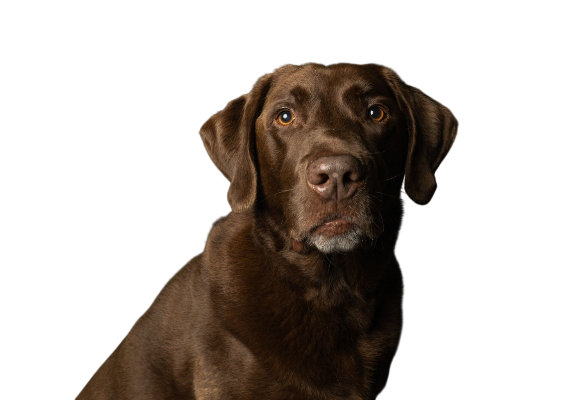
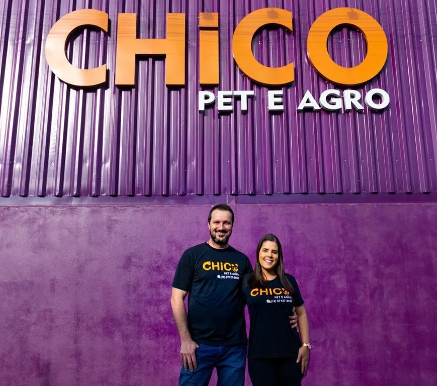
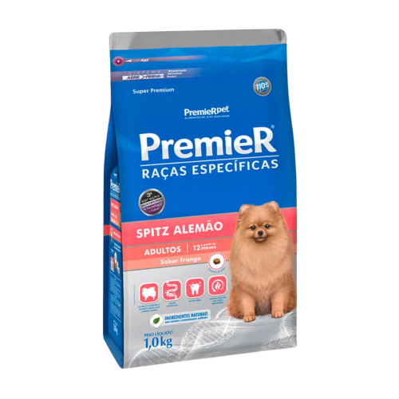

Ofereça a saúde e o carinho que o seu melhor amigo merece.
Atendimento especializado, banho, tosa e cuidados completos para o seu pet.
Conhecer Serviços
Atendimento especializado, banho, tosa e cuidados completos para o seu pet.
Conhecer Serviços
.svg)
Nascemos do amor pelos animais com o propósito de oferecer um cuidado completo num só lugar. Combinamos a estrutura de um consultório veterinário especializado ao carinho do nosso banho e tosa, garantindo a saúde, a segurança e o bem-estar do seu pet em cada etapa da vida.

Consultas, exames e acompanhamento preventivo com profissionais dedicados.
Cuidados de higiene e estética com produtos de alta qualidade e carinho.
As melhores opções em rações, medicamentos e artigos essenciais.
A Casa para Cães Home Class foi desenvolvida para oferecer o máximo de conforto, segurança e proteção ao seu pet. Com design moderno que remete a uma verdadeira residência incluindo detalhes de telhado e chaminé ela garante abrigo ideal tanto para ambientes internos quanto externos. Fabricada em material plástico de alta resistência e fácil higienização, possui estrutura reforçada e ventilação adequada.
.png)
.png)
Ofereça ao seu cão um espaço acolhedor e charmoso com a Casa Home Class Vermelha. Projetada para garantir o bem-estar do seu pet, possui um acabamento vibrante com detalhes estruturais que combinam praticidade e elegância. Produzida com material leve e resistente, facilita o transporte e a manutenção diária, além de proteger contra variações climáticas.
Nutrição sob medida para as necessidades do seu Bulldog Francês. A ração PremieR Raças Específicas para Bulldog Francês Adultos (a partir de 12 meses) no sabor Frango foi formulada pensando no formato do grão para facilitar a preensão, além de auxiliar na saúde das articulações e na redução do odor das fezes. Formulação Super Premium desenvolvida com ingredientes naturais.
.png)
.png)
Desenvolvida especialmente para atender ao temperamento e à anatomia do Shih Tzu, esta ração Super Premium proporciona nutrição completa e balanceada. Com ingredientes naturais e sabor Frango, ela auxilia no cuidado da pelagem longa, promovendo brilho e maciez, além de cuidar da saúde oral e intestinal do seu pet.
A nutrição exata para o seu Spitz Alemão (Lulu da Pomerânia). Esta ração traz uma combinação de nutrientes focada no suporte à pelagem abundante e exuberante da raça, além de conter grãos no tamanho perfeito para mandíbulas pequenas. Livre de corantes e aromatizantes artificiais.

.png)
Formulada exclusivamente para suprir os desafios nutricionais da raça Yorkshire Terrier. Com sabor Frango e grãos em formato especial para facilitar a mastigação, esta ração previne a formação de tártaro e auxilia no trato urinário e digestivo, garantindo vitalidade para o cão adulto.
Endereço
SC Palmeiras/SP
Horario de Atendimento
8:00 ás 18:00
8:00 ás 14:00
Dedicamos cuidado, carinho e paciência de verdade para que o seu pet se sinta acolhido, seguro e muito bem tratado em cada visita.
Estamos localizados em um ponto estratégico e de fácil acesso em Santa Cruz das Palmeiras, contando com estacionamento próprio para o seu total conforto.
Estamos localizados em um ponto estratégico e de fácil acesso em Santa Cruz das Palmeiras, contando com estacionamento próprio para o seu total conforto.